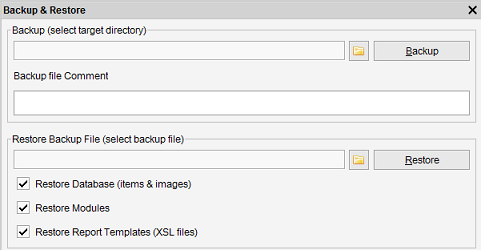

Backup & Restore
Menu path: Tools > Backup & Restore
Once your collection grows and grows it is a good idea to make a backup of your data.

Imagine yourself re-entering all the information you have lost by a virus attack, a hard disk crash or .. !
Make sure to make frequent backups and to store them at least on another hard drive within your pc, but preferably
on an external medium.
Creating a backup
Select a target directory where Data Crow can write the backup file and press "Backup". Once done all your settings, modules,
images and the database will have been backed up!
Restoring a backup
First you have to indicate what should be restored from the backup. In most cases it will be enough to only restore the database.
Optionally you can select to restore the modules and report templates. This is only needed when the backup contains custom or
modified modules and/or reports.
To restore a backup, browse for the backup file and press "Restore". Data Crow will restore the database (overwriting the current!),
your images and all yours settings. After the restore has finished Data Crow is up and running on your restored database,
using the restored settings.